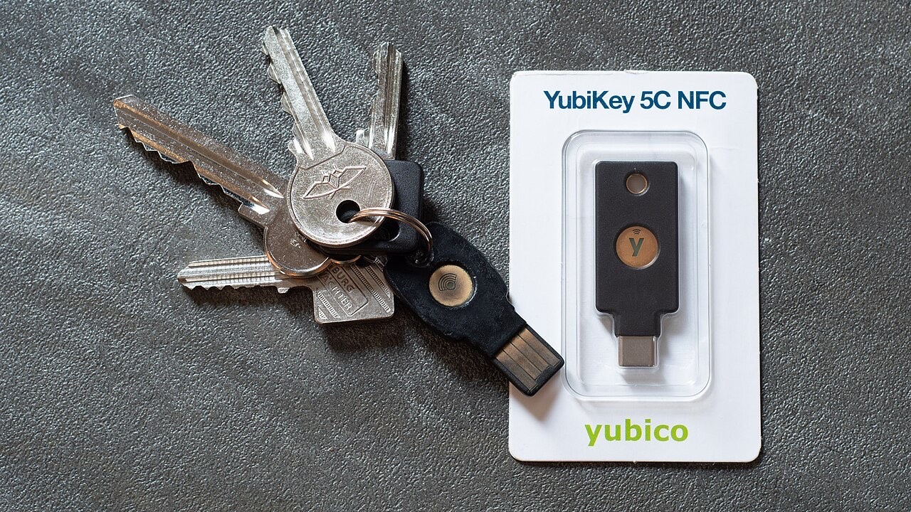

From shared secrets to key pairs
A password is a shared secret : the user knows it and the service stores a copy of it, or a hash of it. Anything shared can be phished, leaked in a breach or reused on another site. A passkey replaces that secret with a cryptographic key pair.
The private key stays inside the user's device or password manager and never leaves it. The service only stores the public key . During login, the device signs a challenge sent by the site, and the server verifies the signature with the public key. Even if the server is breached, there is no password to steal.
